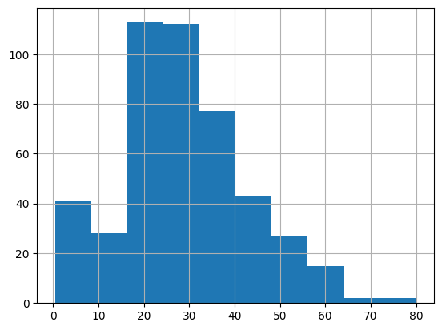
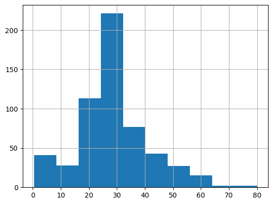
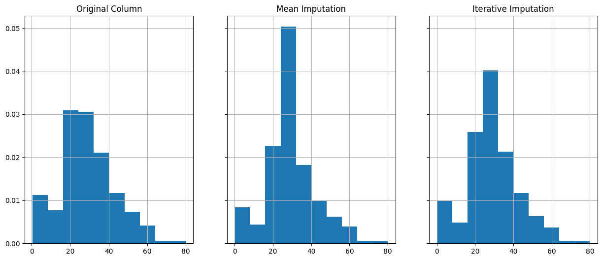
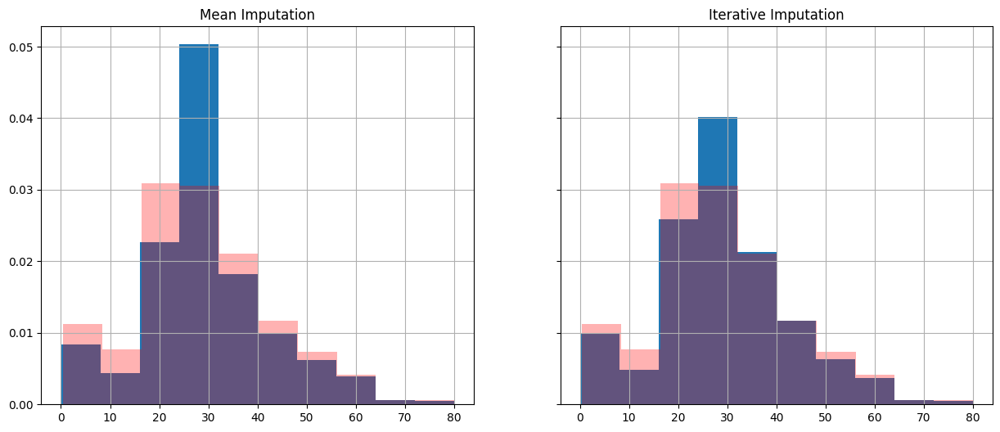

import pandas as pd
from sklearn.model_selection import train_test_split
import numpy as np
import matplotlib.pyplot as plt31 Imputation (Titanic Dataset)
While some models (e.g. XGBoost) can cope with missing data by default, some models will require us to deal with missing values ourselves, and it can be valuable to deal with missing values using our own chosen methods even when the model can cope with the missing values as its methods can often be simplistic.
Let’s load in the new packages for this notebook.
from sklearn.impute import SimpleImputer
# sklearn iterative imputer is still experimental so needs a special import
from sklearn.experimental import enable_iterative_imputer # noqa
from sklearn.impute import IterativeImputerLet’s load in and split our dataset.
The processed titanic dataset has already dealt with missing data, so we’re going to go back to the unprocessed dataset.
Therefore, we’re also going to undertake some of the steps from the data_preprocessing_and_eda.ipynb file.
try:
data = pd.read_csv("data/raw_data.csv")
except FileNotFoundError:
# Download raw data:
address = 'https://raw.githubusercontent.com/MichaelAllen1966/' + \
'1804_python_healthcare/master/titanic/data/train.csv'
data = pd.read_csv(address)
# Create a data subfolder if one does not already exist
import os
data_directory ='./data/'
if not os.path.exists(data_directory):
os.makedirs(data_directory)
# Save data
data.to_csv(data_directory + 'raw_data.csv', index=False)
print(f"Total number of rows in raw dataset: {len(data)}")Total number of rows in raw dataset: 89131.1 Some initial preprocessing of the raw data prior to imputation
Let’s take a look at a sample of the data.
data.head()| PassengerId | Survived | Pclass | Name | Sex | Age | SibSp | Parch | Ticket | Fare | Cabin | Embarked | |
|---|---|---|---|---|---|---|---|---|---|---|---|---|
| 0 | 1 | 0 | 3 | Braund, Mr. Owen Harris | male | 22.0 | 1 | 0 | A/5 21171 | 7.2500 | NaN | S |
| 1 | 2 | 1 | 1 | Cumings, Mrs. John Bradley (Florence Briggs Th... | female | 38.0 | 1 | 0 | PC 17599 | 71.2833 | C85 | C |
| 2 | 3 | 1 | 3 | Heikkinen, Miss. Laina | female | 26.0 | 0 | 0 | STON/O2. 3101282 | 7.9250 | NaN | S |
| 3 | 4 | 1 | 1 | Futrelle, Mrs. Jacques Heath (Lily May Peel) | female | 35.0 | 1 | 0 | 113803 | 53.1000 | C123 | S |
| 4 | 5 | 0 | 3 | Allen, Mr. William Henry | male | 35.0 | 0 | 0 | 373450 | 8.0500 | NaN | S |
Let’s look at some of the column counts, passing in dropna=False to ensure any missing values (if any) are included in counts.
data['SibSp'].value_counts(dropna=False)0 608
1 209
2 28
4 18
3 16
8 7
5 5
Name: SibSp, dtype: int64We can also get a summary of missing values.
pd.DataFrame(
data.isna().mean().round(4),
columns=["Percentage of Values Missing"]
)| Percentage of Values Missing | |
|---|---|
| PassengerId | 0.0000 |
| Survived | 0.0000 |
| Pclass | 0.0000 |
| Name | 0.0000 |
| Sex | 0.0000 |
| Age | 0.1987 |
| SibSp | 0.0000 |
| Parch | 0.0000 |
| Ticket | 0.0000 |
| Fare | 0.0000 |
| Cabin | 0.7710 |
| Embarked | 0.0022 |
Let’s do a couple of preprocessing steps.
###############################
# Replace unclear data values #
###############################
embarked_lookup = {
'S': 'Southampton',
'C': 'Cherbourg',
'Q': 'Queenstown'
}
# Note that 'get' defaults to 'None' if the key doesn't appear in the dictionary lookup.
data['Embarked'] = data['Embarked'].apply(lambda row_value: embarked_lookup.get(row_value))
data['Embarked'].value_counts(dropna=False)Southampton 644
Cherbourg 168
Queenstown 77
None 2
Name: Embarked, dtype: int64#######################
# One hot encoding #
#######################
# here we've asked for an additional column when no value is recorded for the embarkation point
one_hot = pd.get_dummies(data['Embarked'], prefix='Embarked', dummy_na=True).astype('int')
# Drop the column as it is now encoded
data = data.drop('Embarked', axis = 1)
# Join the encoded df
data = data.join(one_hot, how="left")We can now just confirm that the number of people missing agree with our dataset from before.
data.loc[:, data.columns.str.startswith('Embarked')].sum(axis=0)Embarked_Cherbourg 168
Embarked_Queenstown 77
Embarked_Southampton 644
Embarked_nan 2
dtype: int64Now let’s deal with our remaining preprocessing steps.
Notice that here we don’t do anything to values that are neither male nor female so they will remain as their original value.
From our initial checks, we know that in this case no values were missing in the Sex column anyway.
#######################
# Dichotomous columns #
#######################
data['Sex'].replace('male', 1, inplace=True)
data['Sex'].replace('female', 0, inplace=True)
data = data.rename(columns={'Sex': 'IsMale'})Now let’s tidy up and display our final output.
#####################################
# Tidying up remaining column names #
#####################################
data = data.drop(columns=['Name', 'Ticket', 'Cabin'])
data = data.rename(columns={'Embarked_nan':'Embarked_Unknown'})
data.head()| PassengerId | Survived | Pclass | IsMale | Age | SibSp | Parch | Fare | Embarked_Cherbourg | Embarked_Queenstown | Embarked_Southampton | Embarked_Unknown | |
|---|---|---|---|---|---|---|---|---|---|---|---|---|
| 0 | 1 | 0 | 3 | 1 | 22.0 | 1 | 0 | 7.2500 | 0 | 0 | 1 | 0 |
| 1 | 2 | 1 | 1 | 0 | 38.0 | 1 | 0 | 71.2833 | 1 | 0 | 0 | 0 |
| 2 | 3 | 1 | 3 | 0 | 26.0 | 0 | 0 | 7.9250 | 0 | 0 | 1 | 0 |
| 3 | 4 | 1 | 1 | 0 | 35.0 | 1 | 0 | 53.1000 | 0 | 0 | 1 | 0 |
| 4 | 5 | 0 | 3 | 1 | 35.0 | 0 | 0 | 8.0500 | 0 | 0 | 1 | 0 |
Now let’s get our data ready for machine learning.
data = data.astype(float)
# Drop Passengerid (axis=1 indicates we are removing a column rather than a row)
# We drop passenger ID as it is not original data
data.drop('PassengerId', inplace=True, axis=1)
X = data.drop('Survived',axis=1) # X = all 'data' except the 'survived' column
y = data['Survived'] # y = 'survived' column from 'data'
feature_names = X.columns.tolist()Finally, let’s check we haven’t lost or gained any rows!
(if we were automating this, we may turn this into a hard-coded test that will cause the notebook/script to fail if the dataset is no longer the same size as the original dataset).
print(f"Total number of rows in raw dataset: {len(data)}")Total number of rows in raw dataset: 89131.2 Checking for Missing Values
Let’s just remind ourselves of our columns and their missing data.
pd.DataFrame(
(data.isna().mean()*100).round(2),
columns=["Percentage of Values Missing"]
)| Percentage of Values Missing | |
|---|---|
| Survived | 0.00 |
| Pclass | 0.00 |
| IsMale | 0.00 |
| Age | 19.87 |
| SibSp | 0.00 |
| Parch | 0.00 |
| Fare | 0.00 |
| Embarked_Cherbourg | 0.00 |
| Embarked_Queenstown | 0.00 |
| Embarked_Southampton | 0.00 |
| Embarked_Unknown | 0.00 |
We could choose to impute the embarkation as well; however, in this case, as it’s a low number of samples we will just choose to stick with that being unknown.
31.3 A note on the order of steps
To avoid leakage - where information from the testing data, like the distribution of data, influences your training data - you should perform imputation steps after splitting your data into training and testing datasets.
X_train_val, X_test, y_train_val, y_test = train_test_split(X, y, test_size=0.2, random_state=42)
X_train, X_validate, y_train, y_validate = train_test_split(X_train_val, y_train_val, test_size=0.2, random_state=42)
print(f"Training Dataset Samples: {len(X_train)}")
print(f"Validation Dataset Samples: {len(X_validate)}")
print(f"Testing Dataset Samples: {len(X_test)}")Training Dataset Samples: 569
Validation Dataset Samples: 143
Testing Dataset Samples: 179This is why imputing categorical columns can complicate things slightly - you need to do the split, but then you will need to apply some transformations - like one-hot encoding - to each dataset separately.
Good use of functions can ensure this is a relatively painless process - but is not one we’ll cover today.
31.4 Exploring the distribution prior to imputation
As we’re just looking at age today, let’s take a look at that column and some statistics.
X_train['Age'].mean()28.99313043478261X_train['Age'].median()28.0X_train['Age'].mode()0 24.0
Name: Age, dtype: float64X_train['Age'].hist()
Let’s find the missing values and pull them out so we can track how they change.
indices_missing_age = X_train[X_train['Age'].isna()].index
indices_missing_ageInt64Index([517, 792, 420, 95, 495, 384, 159, 301, 826, 274,
...
468, 470, 64, 223, 564, 284, 888, 19, 295, 214],
dtype='int64', length=109)31.5 Simple Imputation
31.5.1 Mean Imputation
First, we’ll just show how to replace every missing value in ‘Age’ with the mean value for age using the SimpleImputer.
imp_mean = SimpleImputer(missing_values=np.nan, strategy='mean')
X_train_mean_imp = imp_mean.fit_transform(X_train)
X_train_mean_imparray([[ 3. , 1. , 28.99313043, ..., 1. ,
0. , 0. ],
[ 3. , 0. , 28.99313043, ..., 0. ,
1. , 0. ],
[ 2. , 0. , 33. , ..., 0. ,
1. , 0. ],
...,
[ 2. , 1. , 29. , ..., 0. ,
1. , 0. ],
[ 3. , 0. , 27. , ..., 0. ,
1. , 0. ],
[ 3. , 1. , 20. , ..., 0. ,
1. , 0. ]])However, when we do this, we find that our output is now a numpy array instead of a dataframe.
We can use the following notation to avoid this issue.
X_train_mean_imp = X_train.copy()
X_train_mean_imp.values[:] = SimpleImputer().fit_transform(X_train)
X_train_mean_imp| Pclass | IsMale | Age | SibSp | Parch | Fare | Embarked_Cherbourg | Embarked_Queenstown | Embarked_Southampton | Embarked_Unknown | |
|---|---|---|---|---|---|---|---|---|---|---|
| 517 | 3.0 | 1.0 | 28.99313 | 0.0 | 0.0 | 24.1500 | 0.0 | 1.0 | 0.0 | 0.0 |
| 792 | 3.0 | 0.0 | 28.99313 | 8.0 | 2.0 | 69.5500 | 0.0 | 0.0 | 1.0 | 0.0 |
| 472 | 2.0 | 0.0 | 33.00000 | 1.0 | 2.0 | 27.7500 | 0.0 | 0.0 | 1.0 | 0.0 |
| 483 | 3.0 | 0.0 | 63.00000 | 0.0 | 0.0 | 9.5875 | 0.0 | 0.0 | 1.0 | 0.0 |
| 9 | 2.0 | 0.0 | 14.00000 | 1.0 | 0.0 | 30.0708 | 1.0 | 0.0 | 0.0 | 0.0 |
| ... | ... | ... | ... | ... | ... | ... | ... | ... | ... | ... |
| 79 | 3.0 | 0.0 | 30.00000 | 0.0 | 0.0 | 12.4750 | 0.0 | 0.0 | 1.0 | 0.0 |
| 164 | 3.0 | 1.0 | 1.00000 | 4.0 | 1.0 | 39.6875 | 0.0 | 0.0 | 1.0 | 0.0 |
| 117 | 2.0 | 1.0 | 29.00000 | 1.0 | 0.0 | 21.0000 | 0.0 | 0.0 | 1.0 | 0.0 |
| 8 | 3.0 | 0.0 | 27.00000 | 0.0 | 2.0 | 11.1333 | 0.0 | 0.0 | 1.0 | 0.0 |
| 131 | 3.0 | 1.0 | 20.00000 | 0.0 | 0.0 | 7.0500 | 0.0 | 0.0 | 1.0 | 0.0 |
569 rows × 10 columns
Let’s see what this has done to our data distribution.
X_train_mean_imp['Age'].hist()
This looks quite different to our original distribution.
X_train['Age'].hist()Let’s look at the individual rows.
X_train_mean_imp.loc[indices_missing_age]| Pclass | IsMale | Age | SibSp | Parch | Fare | Embarked_Cherbourg | Embarked_Queenstown | Embarked_Southampton | Embarked_Unknown | |
|---|---|---|---|---|---|---|---|---|---|---|
| 517 | 3.0 | 1.0 | 28.99313 | 0.0 | 0.0 | 24.1500 | 0.0 | 1.0 | 0.0 | 0.0 |
| 792 | 3.0 | 0.0 | 28.99313 | 8.0 | 2.0 | 69.5500 | 0.0 | 0.0 | 1.0 | 0.0 |
| 420 | 3.0 | 1.0 | 28.99313 | 0.0 | 0.0 | 7.8958 | 1.0 | 0.0 | 0.0 | 0.0 |
| 95 | 3.0 | 1.0 | 28.99313 | 0.0 | 0.0 | 8.0500 | 0.0 | 0.0 | 1.0 | 0.0 |
| 495 | 3.0 | 1.0 | 28.99313 | 0.0 | 0.0 | 14.4583 | 1.0 | 0.0 | 0.0 | 0.0 |
| ... | ... | ... | ... | ... | ... | ... | ... | ... | ... | ... |
| 284 | 1.0 | 1.0 | 28.99313 | 0.0 | 0.0 | 26.0000 | 0.0 | 0.0 | 1.0 | 0.0 |
| 888 | 3.0 | 0.0 | 28.99313 | 1.0 | 2.0 | 23.4500 | 0.0 | 0.0 | 1.0 | 0.0 |
| 19 | 3.0 | 0.0 | 28.99313 | 0.0 | 0.0 | 7.2250 | 1.0 | 0.0 | 0.0 | 0.0 |
| 295 | 1.0 | 1.0 | 28.99313 | 0.0 | 0.0 | 27.7208 | 1.0 | 0.0 | 0.0 | 0.0 |
| 214 | 3.0 | 1.0 | 28.99313 | 1.0 | 0.0 | 7.7500 | 0.0 | 1.0 | 0.0 | 0.0 |
109 rows × 10 columns
We can see that they all have the same value!
X_train_mean_imp.loc[indices_missing_age]['Age'].value_counts()28.99313 109
Name: Age, dtype: int64We should round this to the nearest integer to match the original data.
X_train_mean_imp['Age'] = X_train_mean_imp['Age'].round(0)
X_train_mean_imp.head()| Pclass | IsMale | Age | SibSp | Parch | Fare | Embarked_Cherbourg | Embarked_Queenstown | Embarked_Southampton | Embarked_Unknown | |
|---|---|---|---|---|---|---|---|---|---|---|
| 517 | 3.0 | 1.0 | 29.0 | 0.0 | 0.0 | 24.1500 | 0.0 | 1.0 | 0.0 | 0.0 |
| 792 | 3.0 | 0.0 | 29.0 | 8.0 | 2.0 | 69.5500 | 0.0 | 0.0 | 1.0 | 0.0 |
| 472 | 2.0 | 0.0 | 33.0 | 1.0 | 2.0 | 27.7500 | 0.0 | 0.0 | 1.0 | 0.0 |
| 483 | 3.0 | 0.0 | 63.0 | 0.0 | 0.0 | 9.5875 | 0.0 | 0.0 | 1.0 | 0.0 |
| 9 | 2.0 | 0.0 | 14.0 | 1.0 | 0.0 | 30.0708 | 1.0 | 0.0 | 0.0 | 0.0 |
31.5.2 Function: Simple Imputation
We could turn this into a function to make it quicker to carry out.
def impute_missing_df(df, impute_type="mean"):
imputed_df = df.copy()
imputed_df.values[:] = SimpleImputer(missing_values=np.nan, strategy=impute_type).fit_transform(df)
return imputed_df31.5.3 Mode
Let’s now impute using the modal (most common) value.
X_train_mode_imp = impute_missing_df(X_train, impute_type="most_frequent")X_train_mode_imp.loc[indices_missing_age].head()| Pclass | IsMale | Age | SibSp | Parch | Fare | Embarked_Cherbourg | Embarked_Queenstown | Embarked_Southampton | Embarked_Unknown | |
|---|---|---|---|---|---|---|---|---|---|---|
| 517 | 3.0 | 1.0 | 24.0 | 0.0 | 0.0 | 24.1500 | 0.0 | 1.0 | 0.0 | 0.0 |
| 792 | 3.0 | 0.0 | 24.0 | 8.0 | 2.0 | 69.5500 | 0.0 | 0.0 | 1.0 | 0.0 |
| 420 | 3.0 | 1.0 | 24.0 | 0.0 | 0.0 | 7.8958 | 1.0 | 0.0 | 0.0 | 0.0 |
| 95 | 3.0 | 1.0 | 24.0 | 0.0 | 0.0 | 8.0500 | 0.0 | 0.0 | 1.0 | 0.0 |
| 495 | 3.0 | 1.0 | 24.0 | 0.0 | 0.0 | 14.4583 | 1.0 | 0.0 | 0.0 | 0.0 |
31.5.4 Median
X_train_median_imp = impute_missing_df(X_train, impute_type="median")
X_train_median_imp.loc[indices_missing_age].head()| Pclass | IsMale | Age | SibSp | Parch | Fare | Embarked_Cherbourg | Embarked_Queenstown | Embarked_Southampton | Embarked_Unknown | |
|---|---|---|---|---|---|---|---|---|---|---|
| 517 | 3.0 | 1.0 | 28.0 | 0.0 | 0.0 | 24.1500 | 0.0 | 1.0 | 0.0 | 0.0 |
| 792 | 3.0 | 0.0 | 28.0 | 8.0 | 2.0 | 69.5500 | 0.0 | 0.0 | 1.0 | 0.0 |
| 420 | 3.0 | 1.0 | 28.0 | 0.0 | 0.0 | 7.8958 | 1.0 | 0.0 | 0.0 | 0.0 |
| 95 | 3.0 | 1.0 | 28.0 | 0.0 | 0.0 | 8.0500 | 0.0 | 0.0 | 1.0 | 0.0 |
| 495 | 3.0 | 1.0 | 28.0 | 0.0 | 0.0 | 14.4583 | 1.0 | 0.0 | 0.0 | 0.0 |
31.6 Iterative Imputation
In the documentation, IterativeImputer is described as a “Multivariate imputer that estimates each feature from all the others.
A strategy for imputing missing values by modeling each feature with missing values as a function of other features in a round-robin fashion.”
Let’s go straight to writing a function for this to make it easier to apply.
**kwargs is a special parameter in python. Here, we’re just using it to pass any number of arguments directly through to the IterativeImputer function so we don’t have to explicitly specify all of the different arguments we might want to allow someone to pass through to the IterativeImputer.
def impute_missing_df_iterative(df, **kwargs):
imputed_df = df.copy()
imputed_df.values[:] = IterativeImputer(**kwargs).fit_transform(df)
return imputed_dfX_train_iterative_imp = impute_missing_df_iterative(
X_train,
missing_values=np.nan,
random_state=42
)
X_train_iterative_imp.loc[indices_missing_age].head()| Pclass | IsMale | Age | SibSp | Parch | Fare | Embarked_Cherbourg | Embarked_Queenstown | Embarked_Southampton | Embarked_Unknown | |
|---|---|---|---|---|---|---|---|---|---|---|
| 517 | 3.0 | 1.0 | 26.458273 | 0.0 | 0.0 | 24.1500 | 0.0 | 1.0 | 0.0 | 0.0 |
| 792 | 3.0 | 0.0 | -4.786686 | 8.0 | 2.0 | 69.5500 | 0.0 | 0.0 | 1.0 | 0.0 |
| 420 | 3.0 | 1.0 | 26.157474 | 0.0 | 0.0 | 7.8958 | 1.0 | 0.0 | 0.0 | 0.0 |
| 95 | 3.0 | 1.0 | 27.785451 | 0.0 | 0.0 | 8.0500 | 0.0 | 0.0 | 1.0 | 0.0 |
| 495 | 3.0 | 1.0 | 26.065750 | 0.0 | 0.0 | 14.4583 | 1.0 | 0.0 | 0.0 | 0.0 |
Straight away we can see a slight problem - someone with an age of minus 4!
We can fix that by passing in the IterativeImputer argument min_value.
X_train_iterative_imp = impute_missing_df_iterative(
X_train,
min_value=0,
missing_values=np.nan,
random_state=42
)
X_train_iterative_imp.head()| Pclass | IsMale | Age | SibSp | Parch | Fare | Embarked_Cherbourg | Embarked_Queenstown | Embarked_Southampton | Embarked_Unknown | |
|---|---|---|---|---|---|---|---|---|---|---|
| 517 | 3.0 | 1.0 | 26.458273 | 0.0 | 0.0 | 24.1500 | 0.0 | 1.0 | 0.0 | 0.0 |
| 792 | 3.0 | 0.0 | 0.000000 | 8.0 | 2.0 | 69.5500 | 0.0 | 0.0 | 1.0 | 0.0 |
| 472 | 2.0 | 0.0 | 33.000000 | 1.0 | 2.0 | 27.7500 | 0.0 | 0.0 | 1.0 | 0.0 |
| 483 | 3.0 | 0.0 | 63.000000 | 0.0 | 0.0 | 9.5875 | 0.0 | 0.0 | 1.0 | 0.0 |
| 9 | 2.0 | 0.0 | 14.000000 | 1.0 | 0.0 | 30.0708 | 1.0 | 0.0 | 0.0 | 0.0 |
Let’s just look at the values for those rows that previously had missing values in ‘age’.
X_train_iterative_imp.loc[indices_missing_age].head()| Pclass | IsMale | Age | SibSp | Parch | Fare | Embarked_Cherbourg | Embarked_Queenstown | Embarked_Southampton | Embarked_Unknown | |
|---|---|---|---|---|---|---|---|---|---|---|
| 517 | 3.0 | 1.0 | 26.458273 | 0.0 | 0.0 | 24.1500 | 0.0 | 1.0 | 0.0 | 0.0 |
| 792 | 3.0 | 0.0 | 0.000000 | 8.0 | 2.0 | 69.5500 | 0.0 | 0.0 | 1.0 | 0.0 |
| 420 | 3.0 | 1.0 | 26.157474 | 0.0 | 0.0 | 7.8958 | 1.0 | 0.0 | 0.0 | 0.0 |
| 95 | 3.0 | 1.0 | 27.785451 | 0.0 | 0.0 | 8.0500 | 0.0 | 0.0 | 1.0 | 0.0 |
| 495 | 3.0 | 1.0 | 26.065750 | 0.0 | 0.0 | 14.4583 | 1.0 | 0.0 | 0.0 | 0.0 |
Let’s compare this new dataframe with the original.
fig, (ax1, ax2, ax3) = plt.subplots(1, 3, figsize=(15, 6), sharey=True)
X_train['Age'].hist(ax=ax1, density=True)
X_train_mean_imp['Age'].hist(ax=ax2, density=True)
X_train_iterative_imp['Age'].hist(ax=ax3, density=True)
ax1.set_title('Original Column')
ax2.set_title('Mean Imputation')
ax3.set_title('Iterative Imputation')Text(0.5, 1.0, 'Iterative Imputation')
Let’s overlay the original data distribution to compare the approaches.
fig, (ax1, ax2) = plt.subplots(1, 2, figsize=(15, 6), sharey=True)
X_train_mean_imp['Age'].hist(ax=ax1, density=True)
X_train_iterative_imp['Age'].hist(ax=ax2, density=True)
X_train['Age'].hist(ax=ax1, alpha=0.3, color="red", density=True)
X_train['Age'].hist(ax=ax2, alpha=0.3, color="red", density=True)
ax1.set_title('Mean Imputation')
ax2.set_title('Iterative Imputation')Text(0.5, 1.0, 'Iterative Imputation')
32 Next Steps
Remember we split out our training and testing data - so we would need to repeat this process on our validation and testing datasets.
Sklearn pipelines can make it easier to apply the imputation steps and avoid data leakage.